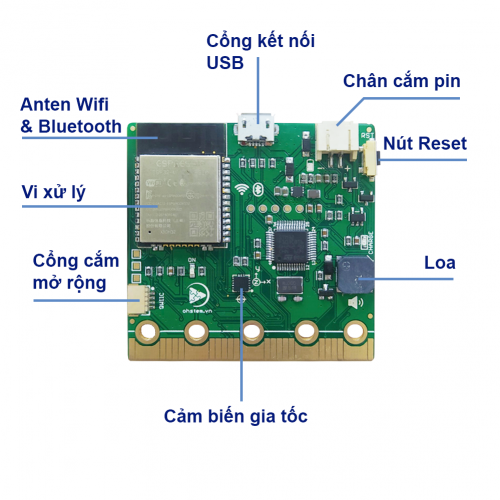
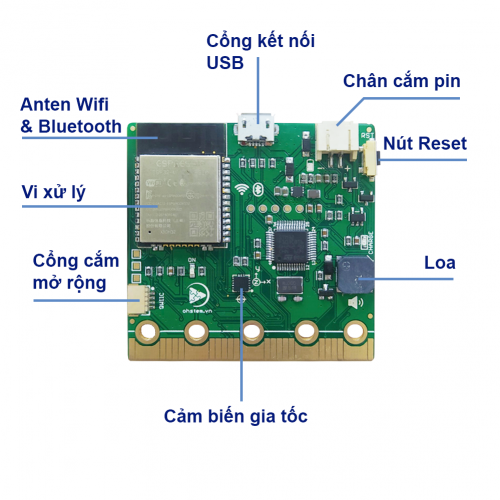
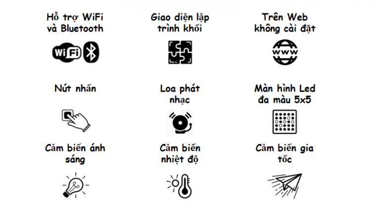
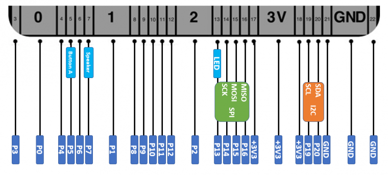

Phần cứng
 

{kind=link}
Thông số kỹ thuật
Máy tính Yolo:Bit có các tính năng phần cứng sau:
Bộ vi điều khiển ESP-32
Bộ xử lý ：Bộ vi xử lý lõi kép Tensilica LX6（một để Xử lý Kết nối Tốc độ Cao và một để Phát triển Ứng dụng Độc lập）
Tần số chính: tần số đồng hồ lên đến 240mhz
SRAM：520KB
Flash：8MB
Tiêu chuẩn Wi-Fi：FCC/CE/TELEC/KCC
Wi-Fi Alliance：802.11 b/g/n/d/e/i/k/r (802.11n，high speed 150 Mbps)，A-MPDU and A-MSDU packed，support 0.4us protective interval
Dải tần số：2.4~2.5 GHz
Giao thức BlueTooth ：Tuân theo tiêu chuẩn BlueTooth 4.2 BR / EDR và BLE
Truyền phát âm thanh qua Bluetooth ：CVSD và âm thanh SBC công suất thấp ：10uA
Chế độ cấp nguồn:
Sử dụng cáp micro USB nối với máy tính (dùng khi lập trình) hoặc kết nối với củ sạc điện thoại, sạc dự phòng.
Sử dụng pin sạc với jack pin mini.
Điện áp hoạt động：3.3V
Phần cứng tích hợp trên xController Board:
20 cổng mở rộng để giao tiếp với các module chức năng
25 đèn LED đa màu RGB
Loa (buzzer)
2 Nút nhấn
Cảm biển nhiệt độ
Cảm biến ánh sáng
Cảm biến gia tốc
Các tính năng
{kind=link}
Chân cắm mở rộng
{kind=link}
Kích thước
Kích thước nhỏ gọn, dễ dàng thao tác với:
Chiều dài: 52mm.
Chiều rộng: 50mm
Độ dày: 11.7mm.